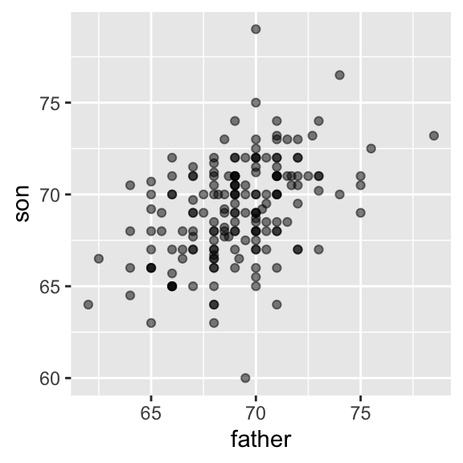
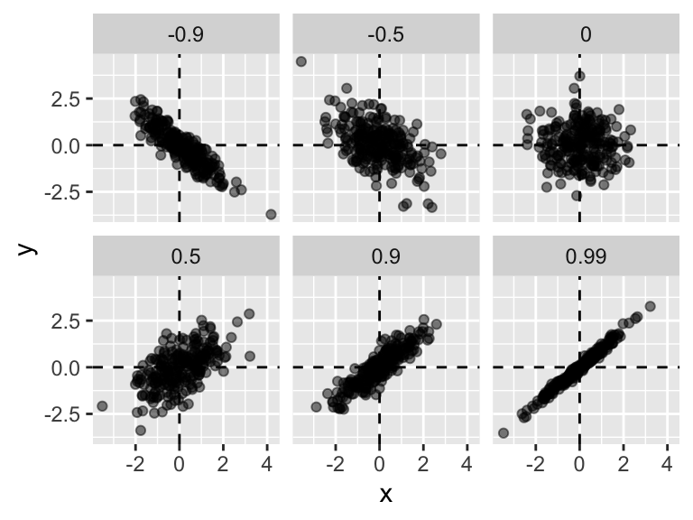
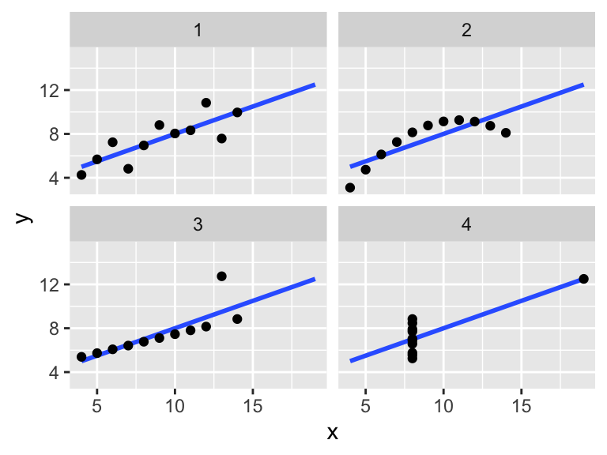
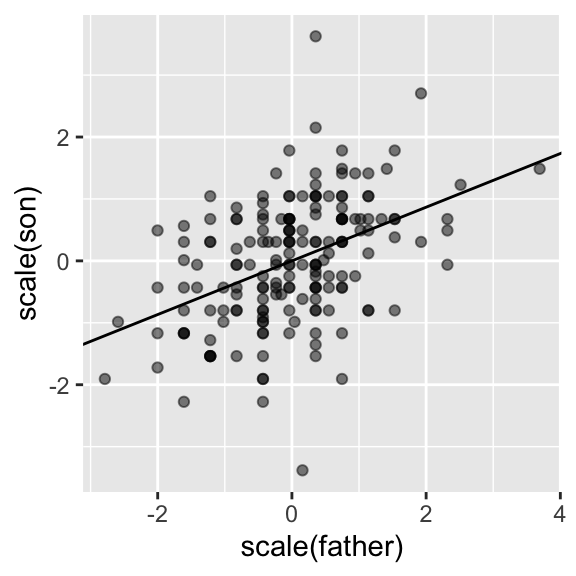

8 Slopes
8.1 Motivation to help understand
This section gives some background and motivation to understand the material you are tested on. You can skip to the next section if you just want to see notes on the materials on the test.
8.1.1 Example is height hereditary?
How well can we predict a child’s height based on the parents’ height?
We can summarize the data with the two averages and two standard deviations. However, this summary fails to describe an important characteristic of the data: the trend that the taller the father, the taller the son.
8.1.2 The population correlation coefficient
The correlation coefficient is defined for a list of pairs \((x_1, y_1), \dots, (x_n,y_n)\) as the average of the product of the standardized values:
\[ \rho = \frac{1}{n} \sum_{i=1}^n \left( \frac{x_i-\mu_x}{\sigma_x} \right)\left( \frac{y_i-\mu_y}{\sigma_y} \right) \]
with \(\mu_x, \mu_y\) the averages of \(x_1,\dots, x_n\) and \(y_1, \dots, y_n\), respectively, and \(\sigma_x, \sigma_y\) the standard deviations.
To understand why this equation does in fact summarize how two variables move together, consider the \(i\)-th entry of \(x\) is \(\left( \frac{x_i-\mu_x}{\sigma_x} \right)\) SDs away from the average. Similarly, the \(y_i\) that is paired with \(x_i\), is \(\left( \frac{y_1-\mu_y}{\sigma_y} \right)\) SDs away from the average \(y\). If \(x\) and \(y\) are unrelated, the product \(\left( \frac{x_i-\mu_x}{\sigma_x} \right)\left( \frac{y_i-\mu_y}{\sigma_y} \right)\) will be positive ( \(+ \times +\) and \(- \times -\) ) as often as negative (\(+ \times -\) and \(- \times +\)) and will average out to about 0. This correlation is the average and therefore unrelated variables will have 0 correlation. If instead the quantities vary together, then we are averaging mostly positive products (\(+ \times +\) and \(- \times -\)) and we get a positive correlation. If they vary in opposite directions, we get a negative correlation.
The correlation coefficient is always between -1 and 1.
To see what data looks like for different values of \(\rho\), here are six examples of pairs with correlations ranging from -0.9 to 0.99:

8.1.3 Sample correlation coefficient
The \(\rho\) defined above is for a population \((x_1,y_1), \dots, (x_n, y_n)\)
If we have a sample \((X_1,Y_1), \dots, (X_N, Y_N)\)we can estimate with the sample correlation:
\[ r = \frac{1}{N-1}\sum_{i=1}^{N}\left(\frac{X-\bar{X}}{s_X}\right)\left(\frac{Y-\bar{Y}}{s_Y}\right) \]
Important
\(r\) is a random variable!
8.1.4 Correlation is not always a useful summary
Correlation is not always a good summary of the relationship between two variables. The following four artificial datasets, referred to as Anscombe’s quartet, famously illustrate this point. All these pairs have a correlation of 0.82:

8.1.5 The regression line
If we are predicting a random variable \(Y\) knowing the value of another \(X=x\) using a regression line, then we predict that for every standard deviation, \(\sigma_X\), that \(x\) increases above the average \(\mu_X\), our prediction \(\hat{Y}\) increase \(\rho\) standard deviations \(\sigma_Y\) above the average \(\mu_Y\) with \(\rho\) the correlation between \(X\) and \(Y\). The formula for the regression is therefore:
\[ \left( \frac{\hat{Y}-\mu_Y}{\sigma_Y} \right) = \rho \left( \frac{x-\mu_X}{\sigma_X} \right) \]
We can rewrite it like this:
\[ \hat{Y} = \mu_Y + \rho \frac{\sigma_Y}{\sigma_X}(x-\mu_X) \]
- The \(\rho \frac{\sigma_Y}{\sigma_X}\) of the regression line is proportional to \(r\).
- You can think of \(\frac{\sigma_Y}{\sigma_X}\) as needed for unit conversion.
Interpretation: If there is perfect correlation, the regression line predicts an increase that is the same number of SDs. If there is 0 correlation, then we don’t use \(x\) at all for the prediction and simply predict the average \(\mu_Y\). For values between 0 and 1, the prediction is somewhere in between. If the correlation is negative, we predict a reduction instead of an increase.
Note
Note that if the correlation is positive and lower than 1, our prediction is closer, in standard units, to the average height than the value used to predict, \(x\), is to the average of the \(x\)s. This is why we call it regression: the son regresses to the average height. In fact, the title of Galton’s paper was: Regression toward mediocrity in hereditary stature.
8.1.6 Linear model represention
Note you can write the equations above in the form lines are usually written: \(y = a + bx\)
In the case of the regression line \(Y\) is random, not exactly a line so we can write the relationship like this
\[ Y = a + bx + \varepsilon \]
Here \(a+bx\) is the regression line and \(\varepsilon\) are the errors representing the distance between observed points and the line.
Note that using the equations above we can write
\[ b = \rho\frac{\sigma_y}{\sigma_x} \]
which as the correlation after unit conversion.
8.2 Notes for the exam
Important
In the exam you don’t need to compute \(s_b\). It is given to you as computer output.
Looks something like this:
Predictor Coef SE Coef T P
Constant 40.93831 4.40460 9.294 < 2e-16
son 0.40713 0.06363 6.398 1.36e-09
s = 2.301 R-sq (adj) = 18.33%\(b\) is calculated for you, it’s the
Coefforson.\(s_b\) is calculated as well, it’s the
SE Coeffor son.Tis simply \(b/s_b\)Pis the p-value for the null the slope being 0.
Example: heights
Here we add the regression line to the original data:

Note
The regression formula implies that if we first standardize the variables, that is subtract the average and divide by the standard deviation, then the regression line has intercept 0 and slope equal to the correlation \(\rho\).
You can make same plot, but using standard units like this:
